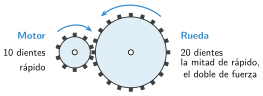

Reducción de movimiento y relación de transmisión
🤔 Pienso5 min
Qué hago aquí: Piensa un momento y contesta con lo que ya sabes. No pasa nada si no lo sabes: es para empezar.
Un piñón de 10 dientes mueve una rueda de 40 dientes. ¿Cuántas vueltas da el piñón mientras la rueda da una vuelta?
📖 Leo y aprendo15 min
Qué hago aquí: Lee despacio, mira los dibujos y los ejemplos, y quédate con la idea clave del final.
La velocidad de giro se mide en rpm: revoluciones (vueltas) por minuto.
Los motores giran muy rápido y con poca fuerza. Las ruedas de un robot necesitan girar despacio y con fuerza. Por eso se usan engranajes.

- Rueda conducida más grande: gira más despacio. Es un reductor.
- Rueda conducida más pequeña: gira más rápido. Es un multiplicador.
✏️ Hago25 min
Qué hago aquí: Haz las actividades en orden. Empieza siempre por las básicas.
Completa: si la rueda conducida es más grande, gira más . Es un .
Motor: 10 dientes. Rueda: 20 dientes. Calcula i.
i = phantom00/phantom00 =
Un motor gira a 600 rpm con 15 dientes. Mueve una rueda de 45 dientes. ¿A qué velocidad gira la rueda?
¿Reductor o multiplicador? a) Motor de 10 dientes y rueda de 30. b) Motor de 40 dientes y rueda de 20.
En una bici, el plato tiene 48 dientes y el piñón 16. Pedaleas a 60 rpm. ¿Cuántas vueltas por minuto da la rueda?
🚀 Amplío (si quieres saber más)
Qué hago aquí: ¿Has terminado? Lee la curiosidad o elige el reto. Es voluntario.
Un motor gira a 1200 rpm. Tiene dos pares de engranajes: 10/40 y 10/30. Calcula la velocidad de salida.
✅ Compruebo5 min
Qué hago aquí: Contesta sin mirar la ficha y marca cómo lo llevas.